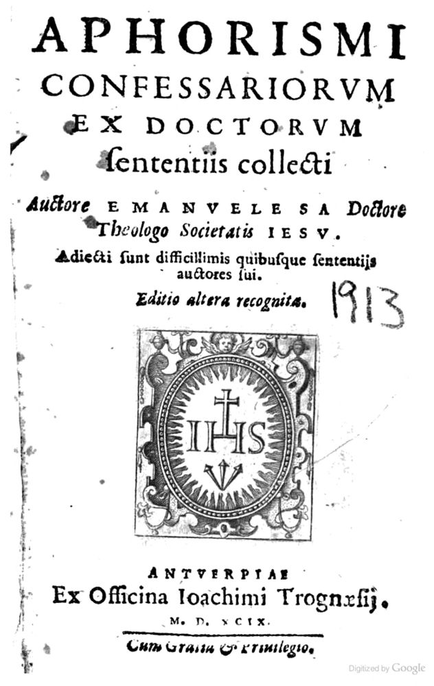

“Tyrannus” (p. 308)
Latin: scan. Highlighted: Lecky’s quotation (the second aphorism).

1. One may have recourse, for justice, to a governing tyrant, if it cannot be had elsewhere.
2. One who governs tyrannically a lawfully acquired lordship cannot be dispossessed without public judgment; but once sentence is passed, anyone may become its executor; and he can be deposed by the people, even one to whom they swore perpetual obedience, if when warned he will not amend. But one who seizes power tyrannically, anyone of the people may kill, if there is no other remedy; for he is a public enemy.
Original Latin
1. Ad tyrannum gubernantem licet recurrere pro justitia, si aliunde non possit haberi.
2. Tyrannicè gubernans justè acquisitum dominium non potest spoliari sine publico judicio; lata verò sententia, potest quisque fieri executor: potest autem deponi à populo, etiam qui juravit ei obedientiam perpetuam, si monitus non vult corrigi. At occupantem tyrannicè potestatem, quisque de populo potest occidere, si aliud non sit remedium; est enim publicus hostis.
| Lecky, 1865 | Sá, 1599 | |
|---|---|---|
| Text | Tyrannice gubernans juste acquisitum dominium non potest spoliari sine publico judicio; lata vero sententia potest quisque fieri executor: potest autem deponi a populo etiam qui juravit ei obedientiam perpetuam si monitus non vult corrigi. At occupantem tyrannice potestatem quisque de populo potest occidere si aliud non sit remedium est enim publicus hostis. | identical, apart from accents and punctuation |
Lecky’s remark that Sá and Molina “expressed the same opinion with still greater emphasis” than Toletus (see the Toletus page) is not borne out on these pages for Molina, whose treatment is hedged with exceptions. Sá’s own entry, taken alone, is blunt: “quisque de populo potest occidere”.
Editor’s notes on this page
Lecky quotes Sá for the view that a nation may depose a lawful tyrant, even one to whom it swore perpetual obedience, and that anyone of the people may kill a usurping tyrant if there is no other remedy. The quotation is word for word what the 1599 printing has. In this printing Sá’s entry is short and unqualified, unlike Molina’s longer discussion.
Further down the rabbit hole
Sources that Lecky cites in the notes next to the ones that cite this page.
- Molina, De justitia et jureWhat Lecky left out of Molina on killing tyrants
- Toletus, Instructio sacerdotumA usurper may be killed, a lawful tyrant may not
- Ayala, De jure et officiis bellicisAnyone may kill a usurper, not a lawful prince
- Chasles, La Comédie en France au seizième siècleA Renaissance Brutus, reprinted when Henri IV was murdered
- De Thou, Histoire universelle, book 96A pope praises the murder of a king
- An Homily against Disobedience and Wilful RebellionHell as the prison of rebels: the Church of England preaches obedience


Backlinks
Every place in Rationalism in Europe that links to this page (generated automatically when the site is built).
- Chapter V: note 66